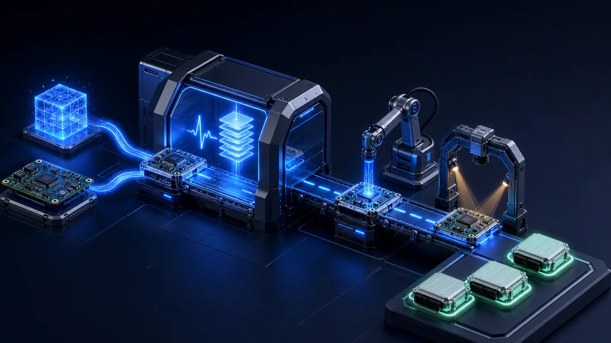

01
요구 분석 · 시스템 설계
기능·
- 요구 분리 기능 요구와 안전 요구(HARA·
ASIL)를 나눠 추적 가능한 형태로 정의 - 제약 반영 설계 메모리·
전력· 발열을 반영한 SW 아키텍처와 단계별 검증 계획 - 표준 적용 판단 AUTOSAR Classic/
Adaptive 적용 여부를 프로젝트 특성에 맞춰 결정
글로벌 양산 경험으로, 제품 안에서 오래 작동하는 소프트웨어와 검증 체계를 만듭니다.
보드 초기 구동과 운영체제 적용부터 HMI·커넥티비티·AUTOSAR·사이버보안·양산 검증까지 제품 개발의 필요한 구간을 수행합니다. 글로벌 완성차 프로젝트에서 쌓은 기준을 산업용 디바이스에도 적용합니다.


ISO/SAE 21434 절차에 맞춘 위협 분석과 보안 설계·
무선 업데이트·
AUTOSAR 기반 공통 컴포넌트와 진단·
요구 사항을 정리하는 일에서 양산 검증까지 여섯 단계로 진행합니다. 하드웨어의 한계와 안전·
기능·

타깃 보드에서 부트로더·

실시간성·

차량 화면과 센서·

가상 장비 시험(HIL)·

부팅·
프로젝트에 따라 AX·
영상 인식 교통·
설비 이상 조기감지·
영상·
모바일 금융·
OTA 업데이트부터 HMI·